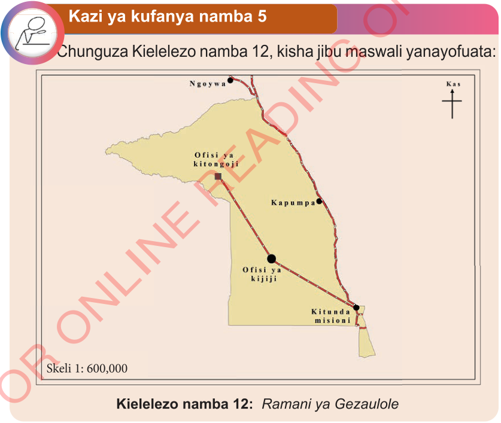

(d)Kwa kutumia skeli ya uwakilishi wa sehemu (uwiano), ili kupata umbali halisi wa ardhi kutoka kituo A hadi B unaweza kukokotolewa kama ilivyofanyika katika upimaji wa umbali ulionyoooka kwa kutumia kipande cha karatasi. Kwa kuwa umbali wa ramani wa Sm 5.5 ulipimwa katika Kielelezo namba 10, na skeli ya ramani ni 1:50000, umbali wa ardhi baada ya kukokotoa utakuwa ni Km 2.75.
Kazi ya kufanya namba 5
Chunguza Kielelezo namba 12, kisha jibu maswali yanayofuata:

Kielelezo namba 12: Ramani ya Gezaulole
JIOGRAFIA NA MAZINGIRA DARASA LA 4.indd 64
12/09/2025 16:33